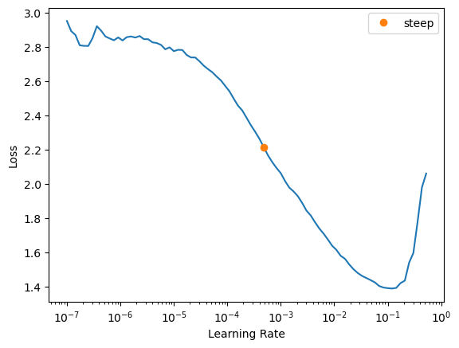

Code
from fastai.vision.all import *
from kaggle import api
from sklearn.metrics import classification_report
SEED = 500I’ve always been interested in how machine learning can apply to visual arts. In particular, computer vision feels like the most direct application to art since we can build programs to classify, modify, and even generate visuals in an artistic fashion!
I’m by no means a deep learning aficionado but it’s exciting to tinker around with the different tools and concepts I have at my disposal. In this notebook, we will be exploring how to build out an image classification model which classifies artwork based on their different types.
We’ll be using the fastai framework to speed up the development process and utilize modern deep learning techniques. Along the way, I will also be covering several different concepts that I have found useful in implementing vision models. I assume some level of familiarity with machine learning concepts such as epochs and mini-batch gradient descent. And ultimately, my hope is for this notebook to become the start of projects that inspire and help other deep learning practitioners along their own journeys!
The inspiration for this notebook comes from the computer vision lessons from fastai, a deep learning framework built mainly over PyTorch. I’m continuing to use fastai for a few reasons:
For the image data, we will be using a Kaggle dataset called Art Images: Drawing / Painting / Sculptures / Engravings which contains around 9000 images of 5 different types of art.
With a bit of that context out of the way, let’s get started!
In order for the entire project to be reproducible, we have to set the seed at any instance where we:
from fastai.vision.all import *
from kaggle import api
from sklearn.metrics import classification_report
SEED = 500We’ll first use the Kaggle API to download the dataset into our working directory.
The dataset provided to us has already separated the data into training and validation sets in the directories dataset/dataset_updated/training_set and dataset/dataset_updated/validation_set, respectively.
To make the path structure a little simpler, we can move these directories to a directory called data/.
data_path = Path('data')download_path = Path('.')
if not data_path.exists():
cred_path = Path('~/.kaggle/kaggle.json').expanduser()
dataset = 'thedownhill/art-images-drawings-painting-sculpture-engraving'
api.dataset_download_cli(dataset, path=download_path)
shutil.unpack_archive(str(download_path / 'art-images-drawings-painting-sculpture-engraving.zip'), download_path)
(download_path / 'art-images-drawings-painting-sculpture-engraving.zip').unlink()
(download_path / 'dataset/dataset_updated/').rename(data_path)
(download_path / 'dataset').rmdir()Downloading art-images-drawings-painting-sculpture-engraving.zip to .
100%|██████████| 583M/583M [00:22<00:00, 27.2MB/s] Just to make sure all of our data is valid, let’s check for any images we cannot open using the fastai verify_images function. If there are any failed images, we can remove them using Path.unlink.
# Retrieve image files on data path
im = get_image_files(data_path)
# Check to see which images we cannot open
failed = verify_images(im)
print(f'Number of images: {len(im)} | Number of failed: {len(failed)} | Remaining: {len(im) - len(failed)}')
failedNumber of images: 8685 | Number of failed: 108 | Remaining: 8577(#108) [Path('data/validation_set/painting/1150.jpg'),Path('data/validation_set/painting/1600.jpg'),Path('data/validation_set/painting/1550.jpg'),Path('data/validation_set/painting/2200.jpg'),Path('data/validation_set/painting/1250.jpg'),Path('data/validation_set/painting/2225.jpg'),Path('data/validation_set/painting/0300.jpg'),Path('data/validation_set/painting/2275.jpg'),Path('data/validation_set/sculpture/170.jpg'),Path('data/validation_set/sculpture/106.jpg')...]failed.map(Path.unlink)(#108) [None,None,None,None,None,None,None,None,None,None...]At the core of fastai’s data abstractions is their DataBlock API which is a high-level data loading API. We design our DataBlock with a few key questions in mind to make sure our data is loaded properly for training:
blocks: What are the types of my inputs and targets?get_items: Where are we getting our data?splitter: How does our data need to be separated for cross-validation?get_y: What is our predicted target?item_tfms: How do we want to transform individual items?batch_tfms: How do we want to transform groups of items?We then create a DataLoaders object from our DataBlock which will allow us to iterate over our dataset as a series of batches.
For our task of classifying different types of artwork, we will answer the previous questions with the following to help create the DataBlock we want:
ImageBlock and set our target to single categories using CategoryBlockget_image_files can be used to get all our image data from a specified pathRandomSplitter with a default 80-20 split.parent_labelFor our task, we’ll spin up a function get_dls to quickly spin up dataloaders with different batch and image sizes.
def get_dls(bs: int, size: int, valid_pct=0.2, seed=1234) -> DataLoaders:
"""
Creates a dataloader for an image recognition task with specified batch size and image size.
# Parameters:
- bs (int): Batch size.
- size (int): Final size of individual images.
# Returns:
- DataLoaders: A dataloader that batches our image data with specific image and batch size.
"""
db = DataBlock(
blocks=(ImageBlock(), CategoryBlock()),
get_items=get_image_files,
splitter=RandomSplitter(valid_pct=valid_pct, seed=seed),
get_y=parent_label,
item_tfms=Resize(300),
batch_tfms=aug_transforms(size=size, min_scale=0.75)
)
return db.dataloaders(data_path / 'training_set', bs=bs, seed=1234)When we create our dataloader, we can verify that our splitter is working as we expect it to.
set_seed(SEED, reproducible=True)
torch.backends.cudnn.deterministic = True
torch.backends.cudnn.benchmark = False
dls = get_dls(64, 128, seed=SEED)
len(dls.train_ds), len(dls.valid_ds)(6177, 1544)Now, let’s check out what images we have to work with using the show_batch function!
# Show an example batch of images
dls.show_batch()Once our data is loaded in, our next step is to specify our model.
One key idea that I have taken away from fastai is the high effectiveness of using transfer learning for new machine learning tasks.
Transfer learning is a method of using pretrained models that were trained on one task as a starting point for training models on a new task.
For computer vision tasks, fastai makes initializing a pretrained model simple through vision_learner–by default, the pretrained parameter is True. When we use a pretrained model, the last layer is replaced with a new linear layer with the same number of outputs as our new transfer learning problem (in this case 5 classes). However, this new layer is randomly initialized so we will need to make sure to tune our model to correctly predict the different artwork types.
To start, we will use the resnet50 architecture and track the accuracy metric (percent of images predicted correctly).
set_seed(SEED, reproducible=True)
learn = vision_learner(dls, resnet50, metrics=accuracy)/home/yang/miniconda3/envs/fastai-learn/lib/python3.10/site-packages/torchvision/models/_utils.py:208: UserWarning: The parameter 'pretrained' is deprecated since 0.13 and will be removed in 0.15, please use 'weights' instead.
warnings.warn(
/home/yang/miniconda3/envs/fastai-learn/lib/python3.10/site-packages/torchvision/models/_utils.py:223: UserWarning: Arguments other than a weight enum or `None` for 'weights' are deprecated since 0.13 and will be removed in 0.15. The current behavior is equivalent to passing `weights=ResNet50_Weights.IMAGENET1K_V1`. You can also use `weights=ResNet50_Weights.DEFAULT` to get the most up-to-date weights.
warnings.warn(msg)For our model, we first need to select a good learning rate to start our training. Fastai implements a learning rate finder method Learner.lr_find based on Leslie Smith’s paper called Cyclical Learning Rates for Training Neural Networks.
Smith describes his approach as the following:
There is a simple way to estimate reasonable minimum and maximum boundary values with one training run of the network for a few epochs. It is a “LR range test”; run your model for several epochs while letting the learning rate increase linearly between low and high LR values.
Essentially, we check our training losses as we grow our learning rate to get an idea of what learning rate performs well.
Fastai takes a slightly different approach: The model is test-trained with learning rates that grow exponentially from a low learning rate to a higher learning rate across a number of mini-batches. The process continues until we find a learning rate where the loss begins to diverge and increases significantly.
What this boils down to is that in the fastai version we don’t necessarily need to run for multiple epochs to get an optimal learning rate as we are training for a set number of mini-batches.
Conveniently, lr_find gives us the loss vs. learning rate plot and also enables us to directly extract learning rates that could be optimal based off different suggestion functions. For example, we can use steep which gets the learning rate with the steepest slope.
set_seed(SEED, reproducible=True)
lr_steep = learn.lr_find(suggest_funcs=steep)Log plot of loss vs. learning rate

We can now start training our model! Using the fit_one_cycle method we are actually training our model with what is called the one-cycle policy, an idea that again comes from Leslie Smith and changes our learning rate over the course of training. I won’t be going into close detail on how the 1cycle policy is implemented in the scope of this article.
At a high level, we are starting at some initial learning rate, linearly increasing our learning rate after every batch up to a maximum learning rate, and from the maximum learning rate down to some minimum learning rate several magnitudes lower than our initial learning rate.
The idea behind this all is to warm up our training with a low learning rate and use the high learning rate to help find minimums in our loss function that are flatter, allowing the model to generalize better.
During the last segment of training, the descending learning rates help the optimizer avoid skipping over a steeper loss within the flatter areas. This process allows our model to converge faster and consequently achieve better results with lower iterations than traditional training methods. Smith calls this occurrence super-convergence.
def plot_example_cycle(x_min, x_max, y_min, y_max, padding):
values = 100
x = np.linspace(x_min, x_max, values + padding)
y1 = np.linspace(y_min, y_max, values // 2, endpoint=False)
y2 = np.linspace(y_max, y_min, values // 2, endpoint=False)
padded_values = np.linspace(y_min, y_min * 1e-2, padding)
y = np.concatenate((y1, y2, padded_values))
plt.plot(x, y)
plt.xlabel('Epochs')
plt.ylabel('Learning rate')
plt.show()plot_example_cycle(0, 40, 0.001, 0.01, 15)With transfer learning, our model has additional new layers that we can train for the problem we are trying to solve. At the start of training, we may not want to completely readjust the weights in the model’s previously learned layers because they account for high-level details of the image like line and shape.
In a pretrained model, the previous trained layers start out frozen, meaning their weights aren’t updated during training unless we unfreeze them. Later, we will unfreeze all the layers and use a range of learning rates to help adjust them slightly for our artwork classification.
Fastai recommends training the frozen pretrained model for a few epochs before training the full pretrained model. We’ll start with 3 epochs frozen using the learning rate we found before and then train the full model for 10 epochs. We can get an idea of how our error rates changes across training from here. Our losses along with our metrics will be useful in determining if we’ve fitted a decent model or whether we are underfitting or overfitting.
set_seed(SEED, reproducible=True)
learn.fit_one_cycle(3, lr_steep.steep)| epoch | train_loss | valid_loss | accuracy | time |
|---|---|---|---|---|
| 0 | 0.736086 | 0.369670 | 0.887953 | 00:08 |
| 1 | 0.441399 | 0.284378 | 0.909326 | 00:08 |
| 2 | 0.321099 | 0.254835 | 0.911269 | 00:08 |
Now we can unfreeze the layers and find a new learning rate to train on:
set_seed(SEED, reproducible=True)
learn.unfreeze()
learn.lr_find()SuggestedLRs(valley=0.00013182566908653826)set_seed(SEED, reproducible=True)
learn.fit_one_cycle(10, 1e-5)| epoch | train_loss | valid_loss | accuracy | time |
|---|---|---|---|---|
| 0 | 0.290775 | 0.243898 | 0.915155 | 00:09 |
| 1 | 0.292668 | 0.236558 | 0.915155 | 00:09 |
| 2 | 0.248140 | 0.215108 | 0.920984 | 00:09 |
| 3 | 0.219748 | 0.209778 | 0.926166 | 00:09 |
| 4 | 0.192568 | 0.201274 | 0.928109 | 00:09 |
| 5 | 0.186713 | 0.200779 | 0.926813 | 00:09 |
| 6 | 0.169397 | 0.188377 | 0.929404 | 00:09 |
| 7 | 0.157394 | 0.192167 | 0.931347 | 00:09 |
| 8 | 0.146395 | 0.195563 | 0.928109 | 00:09 |
| 9 | 0.159019 | 0.191388 | 0.931995 | 00:09 |
After training our model, we will see how our training and validation losses have changed over the course of our iteration / epochs using loss curves. Loss curves won’t provide the entire story of our model but we’ll have a broad picture of how our model performs over the selected dataset and batch size. Figure 2 shows the loss curves across the training iterations.
learn.recorder.plot_loss()
plt.xlabel("Iterations")
plt.ylabel("Loss")
plt.title('Loss Curves Across Iterations')
plt.show()
Initially, our validation loss starts out lower than our training loss but our training loss quickly converges as our training progresses.
We should note that we reach a point where our validation loss is higher than our training loss and stagnates a bit. The model is becoming overconfident in its predictions and we have to ask ourselves: are we overfitting?
Figure 3 shows the loss curves across the training epochs in case we need to go back and retrain our model to a previous epoch.
train_loss = L(learn.recorder.values).itemgot(0)
valid_loss = L(learn.recorder.values).itemgot(1)
plt.plot(train_loss)
plt.plot(valid_loss)
plt.xlabel('Epoch')
plt.ylabel('Loss')
plt.title('Loss Curves Across Epochs')
plt.show()Overfitting occurs when we have trained for too long and the model begins to “memorize” the training data while failing to generalize well to new data.
When we look at our losses visually, we can see that there is an emerging gap between our training and validation loss and the latter seems to stagnate. How big of a gap is too big? It’s hard to say because it depends on a variety of factors like the scale of the dataset. Rather, we should look for general stability in our validation loss throughout training. If our validation loss begins to increase significantly, then we might begin to worry that we are overfitting to our training data too much.
We could stop early, but with one-cycle training that may not be a good idea because we may not allow our learning rate to reach the small values that would benefit our training.
One key takeaway from fastai is that we should be checking to see if our performance metrics are getting significantly worse to decide if the model is overfitting. It’s not enough to view the losses alone.
Figure 4 shows the accuracy across the training epochs.
accuracy_metric = L(learn.recorder.values).itemgot(2)
highest_accuracy_epoch = np.argmax(accuracy_metric)
print(f'Highest accuracy during last run: {highest_accuracy_epoch}')
plt.xlabel('Accuracy')
plt.ylabel('Epoch')
plt.title('Accuracy Across Epochs')
plt.xticks(np.arange(0, len(accuracy_metric) + 1, 5))
plt.plot(accuracy_metric)
plt.scatter(highest_accuracy_epoch, accuracy_metric[highest_accuracy_epoch], color='orange')
plt.show()Highest accuracy during last run: 9
Our highest accuracy is at epoch 9 but the accuracy appears to be flattening out towards the end. If we take into account both our validation loss and metric, then we aren’t too concerned about overfitting. Fortunately, we do have a few options in the case of severe overfitting! We could introduce weight decay or even rerun our model with a lower number of epochs and adjust from there. In this case, we will add some weight decay using discriminative learning rates.
We should keep in mind that our performance metric is what ultimately matters in practice.
As Jeremy Howard states:
“In the end what matters is your accuracy, or more generally your chosen metrics, not the loss. The loss is just the function we’ve given the computer to help us to optimize.”
“Remember, it’s not just that we’re looking for the validation loss to get worse, but the actual metrics. Your validation loss will first get worse during training because the model gets overconfident, and only later will get worse because it is incorrectly memorizing the data. We only care in practice about the latter issue. Remember, our loss function is just something that we use to allow our optimizer to have something it can differentiate and optimize; it’s not actually the thing we care about in practice.”
To really evaluate our model’s performance, we would run our model on a representative test data set that it has never seen before. This will allow us to get a more honest assessment of how our model is doing and we don’t want to report accuracy on our training model alone. Once we’ve decided on a model, we’ll look at how we can use the images we didn’t use for training as a test set.
set_seed(SEED, reproducible=True)
# Reinitialize our model to restart training
learn2 = vision_learner(dls, resnet50, metrics=accuracy, wd=0.1)set_seed(SEED, reproducible=True)
lr_steep = learn2.lr_find(suggest_funcs=steep, show_plot=False)set_seed(SEED, reproducible=True)
learn2.fit_one_cycle(3, lr_steep.steep)| epoch | train_loss | valid_loss | accuracy | time |
|---|---|---|---|---|
| 0 | 0.737313 | 0.343379 | 0.890544 | 00:08 |
| 1 | 0.418140 | 0.294040 | 0.908679 | 00:08 |
| 2 | 0.324219 | 0.272586 | 0.914508 | 00:08 |
set_seed(SEED, reproducible=True)
learn2.unfreeze()
learn2.lr_find()SuggestedLRs(valley=6.30957365501672e-05)set_seed(SEED, reproducible=True)
learn2.fit_one_cycle(10, lr_max=slice(1e-6, 1e-4))| epoch | train_loss | valid_loss | accuracy | time |
|---|---|---|---|---|
| 0 | 0.284886 | 0.262790 | 0.918394 | 00:09 |
| 1 | 0.272633 | 0.263987 | 0.917746 | 00:09 |
| 2 | 0.253378 | 0.242250 | 0.922280 | 00:10 |
| 3 | 0.223389 | 0.225795 | 0.930052 | 00:09 |
| 4 | 0.204689 | 0.231059 | 0.920984 | 00:09 |
| 5 | 0.170040 | 0.227536 | 0.925518 | 00:10 |
| 6 | 0.153856 | 0.218628 | 0.928756 | 00:09 |
| 7 | 0.148347 | 0.223874 | 0.927461 | 00:09 |
| 8 | 0.140296 | 0.223210 | 0.930699 | 00:09 |
| 9 | 0.136215 | 0.218119 | 0.930699 | 00:10 |
Our accuracy is about the same, but both validation losses seemed to stabilize. The validation loss and accuracy are better in our first model, so we will move forward with it for now.
learn2.recorder.plot_loss()
plt.xlabel("Iterations")
plt.ylabel("Loss")
plt.title('Loss Curves Across Iterations')
plt.show()
train_loss = L(learn2.recorder.values).itemgot(0)
valid_loss = L(learn2.recorder.values).itemgot(1)
plt.plot(train_loss)
plt.plot(valid_loss)
plt.xlabel('Epoch')
plt.ylabel('Loss')
plt.title('Loss Curves Across Epochs')
plt.show()
accuracy_metric = L(learn2.recorder.values).itemgot(2)
highest_accuracy_epoch = np.argmax(accuracy_metric)
print(f'Highest accuracy during last run: {highest_accuracy_epoch}')
plt.xlabel('Accuracy')
plt.ylabel('Epoch')
plt.title('Accuracy Across Epochs')
plt.xticks(np.arange(0, len(accuracy_metric) + 1, 5))
plt.plot(accuracy_metric)
plt.scatter(highest_accuracy_epoch, accuracy_metric[highest_accuracy_epoch])
plt.show()Highest accuracy during last run: 8We can use a confusion matrix to see the number of correctly classified and misclassified images on our training set. Figure 8 displays the confusion matrix for the first model we fine-tuned.
interp = ClassificationInterpretation.from_learner(learn)
interp.plot_confusion_matrix()
We can also display a report with common classification metrics like precision, recall, and the F1-score. For this project, we are mainly focused on the F1-score.
The weighted F1-score is the the mean of all the class F1 scores while taking into account the number of occurrences in each class. In general, we are aiming for a balance between precision and recall on a scale between 0 and 1. Our model achieved a weighted F1-score of 0.930 on the training set.
interp.print_classification_report() precision recall f1-score support
drawings 0.83 0.75 0.79 208
engraving 0.78 0.86 0.82 161
iconography 0.97 1.00 0.98 419
painting 0.98 0.94 0.96 410
sculpture 0.96 0.99 0.97 346
accuracy 0.93 1544
macro avg 0.90 0.91 0.90 1544
weighted avg 0.93 0.93 0.93 1544
Figure 9 shows the top 10 losses of training images predicted by our model. We can use this to get a visual idea of what kinds of images our model might be misclassifying.
In particular, from both the classification report and the top losses our model seems to misclassify engravings and drawings more than other types of art. We also see some confusion between iconography and paintings. Maybe not all images are standardized and there are definitely tough cases where the line between painting, drawing, and iconography are blurry.
interp.plot_top_losses(10)It’s fascinating that we are able to classify images at all with these results with a bit of conceptual understanding and a few lines of code! However, we still need to evaluate on the test set for reporting purposes.
The last thing I want to cover is how we can use our newly trained model to make predictions on new artwork images. We first export our model:
# Save model into models/
model_path = Path('models')
learn.export(model_path / 'artwork.pkl')# Load model and display the unique classes that can be predicted by the model
artwork_model = load_learner(model_path / 'artwork.pkl')
artwork_model.dls.vocab['drawings', 'engraving', 'iconography', 'painting', 'sculpture']After retrieving our model, we need to supply our test images as a dataloader. Call the test_dl method on our dataloaders object will allow us to apply all the transformations we used in training and instantly format the test images to be input to the model
test_set_images = get_image_files(data_path / 'validation_set')
test_dl = dls.test_dl(test_set_images, with_labels=True)preds, targs = artwork_model.get_preds(dl=test_dl)
preds, targs(tensor([[8.1243e-07, 1.5549e-05, 9.9998e-01, 6.5165e-09, 1.4742e-10],
[2.0321e-05, 3.8652e-05, 9.9993e-01, 7.0962e-06, 9.2902e-07],
[2.5145e-05, 2.2805e-05, 9.9995e-01, 5.5538e-06, 8.7077e-07],
...,
[9.9996e-01, 3.5446e-06, 4.0841e-08, 9.5171e-06, 2.6933e-05],
[4.2196e-01, 9.0802e-02, 2.3012e-01, 3.5658e-02, 2.2146e-01],
[9.9702e-01, 2.9646e-03, 7.6420e-07, 6.0804e-06, 6.7901e-06]]),
tensor([2, 2, 2, 2, 2, 2, 2, 2, 2, 2, 2, 2, 2, 2, 2, 2, 2, 2, 2, 2, 2, 2, 2, 2,
2, 2, 2, 2, 2, 2, 2, 2, 2, 2, 2, 2, 2, 2, 2, 2, 2, 2, 2, 2, 2, 2, 2, 2,
2, 2, 2, 2, 2, 2, 2, 2, 2, 2, 2, 2, 2, 2, 2, 2, 2, 2, 2, 2, 2, 2, 2, 2,
2, 2, 2, 2, 2, 2, 2, 2, 2, 2, 2, 2, 2, 2, 2, 2, 2, 2, 2, 2, 2, 2, 2, 2,
2, 2, 2, 2, 2, 2, 2, 2, 2, 2, 2, 2, 2, 2, 2, 2, 2, 2, 2, 2, 2, 2, 2, 2,
2, 2, 2, 2, 2, 2, 2, 2, 2, 2, 2, 2, 2, 2, 2, 2, 2, 2, 2, 2, 2, 2, 2, 2,
2, 2, 2, 2, 2, 2, 2, 2, 2, 2, 2, 2, 2, 2, 2, 2, 2, 2, 2, 2, 2, 2, 2, 2,
2, 2, 2, 2, 2, 2, 2, 2, 2, 2, 2, 2, 2, 2, 2, 2, 2, 2, 2, 2, 2, 2, 2, 2,
2, 2, 2, 2, 2, 2, 2, 2, 2, 2, 2, 2, 2, 2, 2, 2, 2, 2, 2, 2, 2, 2, 2, 2,
2, 2, 2, 2, 2, 2, 2, 2, 2, 2, 2, 2, 2, 2, 2, 3, 3, 3, 3, 3, 3, 3, 3, 3,
3, 3, 3, 3, 3, 3, 3, 3, 3, 3, 3, 3, 3, 3, 3, 3, 3, 3, 3, 3, 3, 3, 3, 3,
3, 3, 3, 3, 3, 3, 3, 3, 3, 3, 3, 3, 3, 3, 3, 3, 3, 3, 3, 3, 3, 3, 3, 3,
3, 3, 3, 3, 3, 3, 3, 3, 3, 3, 3, 3, 3, 3, 3, 3, 3, 3, 3, 3, 3, 3, 3, 3,
3, 3, 3, 3, 3, 3, 3, 3, 3, 3, 3, 3, 3, 3, 3, 3, 3, 3, 3, 3, 3, 3, 3, 3,
3, 3, 3, 3, 3, 3, 3, 3, 3, 3, 3, 3, 3, 3, 3, 3, 3, 3, 3, 3, 3, 3, 3, 3,
3, 3, 3, 3, 3, 3, 3, 3, 3, 3, 3, 3, 3, 3, 3, 3, 3, 3, 3, 3, 3, 3, 3, 3,
3, 3, 3, 3, 3, 3, 3, 3, 3, 3, 3, 3, 3, 3, 3, 3, 3, 3, 3, 3, 3, 3, 3, 3,
3, 3, 3, 3, 3, 3, 3, 3, 3, 3, 3, 3, 3, 3, 3, 3, 3, 3, 3, 3, 3, 3, 3, 3,
3, 3, 3, 3, 3, 3, 3, 3, 3, 3, 3, 3, 3, 3, 3, 3, 3, 3, 3, 3, 3, 3, 3, 3,
3, 3, 3, 1, 1, 1, 1, 1, 1, 1, 1, 1, 1, 1, 1, 1, 1, 1, 1, 1, 1, 1, 1, 1,
1, 1, 1, 1, 1, 1, 1, 1, 1, 1, 1, 1, 1, 1, 1, 1, 1, 1, 1, 1, 1, 1, 1, 1,
1, 1, 1, 1, 1, 1, 1, 1, 1, 1, 1, 1, 1, 1, 1, 1, 1, 1, 1, 1, 1, 1, 1, 1,
1, 1, 1, 1, 1, 1, 1, 1, 1, 1, 1, 1, 1, 1, 1, 4, 4, 4, 4, 4, 4, 4, 4, 4,
4, 4, 4, 4, 4, 4, 4, 4, 4, 4, 4, 4, 4, 4, 4, 4, 4, 4, 4, 4, 4, 4, 4, 4,
4, 4, 4, 4, 4, 4, 4, 4, 4, 4, 4, 4, 4, 4, 4, 4, 4, 4, 4, 4, 4, 4, 4, 4,
4, 4, 4, 4, 4, 4, 4, 4, 4, 4, 4, 4, 4, 4, 4, 4, 4, 4, 4, 4, 4, 4, 4, 4,
4, 4, 4, 4, 4, 4, 4, 4, 4, 4, 4, 4, 4, 4, 4, 4, 4, 4, 4, 4, 4, 4, 4, 4,
4, 4, 4, 4, 4, 4, 4, 4, 4, 4, 4, 4, 4, 4, 4, 4, 4, 4, 4, 4, 4, 4, 4, 4,
4, 4, 4, 4, 4, 4, 4, 4, 4, 4, 4, 4, 4, 4, 4, 4, 4, 4, 4, 4, 4, 4, 4, 4,
4, 4, 4, 4, 4, 4, 4, 4, 4, 4, 4, 4, 4, 4, 4, 4, 4, 4, 4, 4, 4, 4, 4, 4,
4, 4, 4, 4, 4, 4, 4, 4, 4, 4, 4, 4, 4, 4, 0, 0, 0, 0, 0, 0, 0, 0, 0, 0,
0, 0, 0, 0, 0, 0, 0, 0, 0, 0, 0, 0, 0, 0, 0, 0, 0, 0, 0, 0, 0, 0, 0, 0,
0, 0, 0, 0, 0, 0, 0, 0, 0, 0, 0, 0, 0, 0, 0, 0, 0, 0, 0, 0, 0, 0, 0, 0,
0, 0, 0, 0, 0, 0, 0, 0, 0, 0, 0, 0, 0, 0, 0, 0, 0, 0, 0, 0, 0, 0, 0, 0,
0, 0, 0, 0, 0, 0, 0, 0, 0, 0, 0, 0, 0, 0, 0, 0, 0, 0, 0, 0, 0, 0, 0, 0,
0, 0, 0, 0, 0, 0, 0, 0, 0, 0, 0, 0, 0, 0, 0, 0]))# Get a list of individual probabilities for each class
# list(zip(artwork_model.dls.vocab, artwork_model.predict(img_inf)[2] * 100))
pred_labels = preds.argmax(dim=1)
(pred_labels == targs).float().mean()tensor(0.9194)print(classification_report(targs, pred_labels, target_names=artwork_model.dls.vocab, digits=4)) precision recall f1-score support
drawings 0.7717 0.8033 0.7871 122
engraving 0.7561 0.7381 0.7470 84
iconography 0.9538 0.9827 0.9680 231
painting 0.9772 0.9386 0.9575 228
sculpture 0.9789 0.9738 0.9764 191
accuracy 0.9194 856
macro avg 0.8875 0.8873 0.8872 856
weighted avg 0.9203 0.9194 0.9196 856
On our test set, the model achieved an overall accuracy of 91.9% and a weighted F1-score of 0.920. Without going into too many optimizations, we were able to find a model that performed remarkably on our artwork data. We applied transfer learning, learned how to determine learning rates with the learning rate finder, and used one-cycle to train a deep learning model with a funny eye for art! Along the way, we also explored important tools for diagnosing our model like loss curves and classification reports.
Although it’s outside the scope of this article, we could now take the next step and retrain our model with the full data for deployment. We would be able to evaluate the model on new data that users are feeding to the model!
We covered a lot of concepts! Deep learning and data science as a whole is an art form. For every step in the model development process there are always more design choices and optimizations we could have made. I’m eager to explore every single concept I’ve been learning about, but there is too much to cover in a single article. I chose to focus on the concepts that I think will help readers understand essential elements of fastai and deep learning.
Here are a few deep learning concepts (computer vision and general topics) that I would love to cover in future posts:
Happy learning!